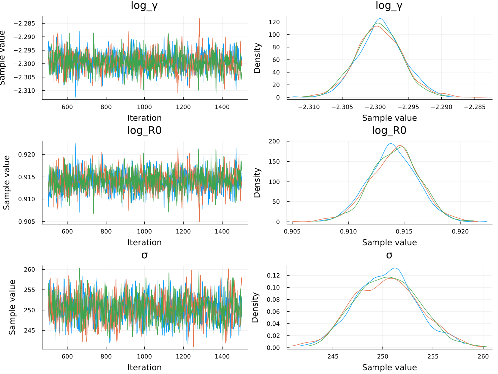
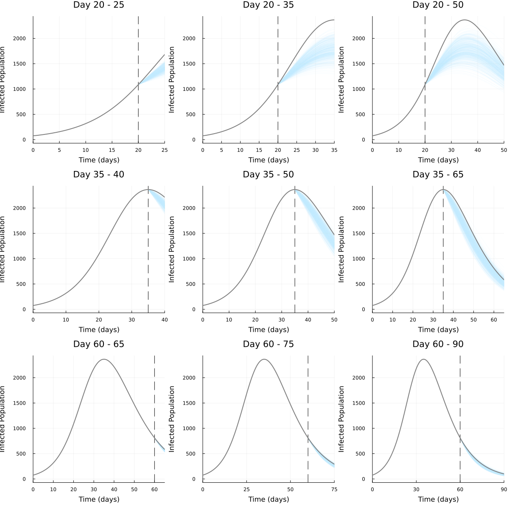
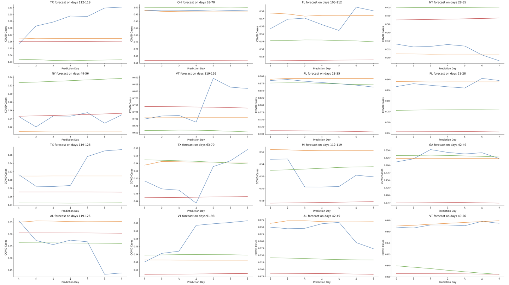
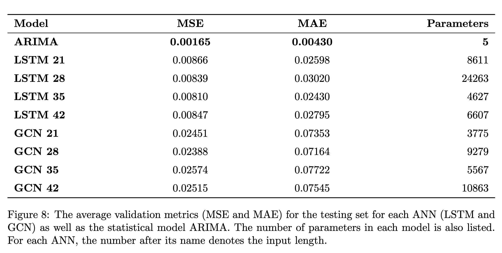
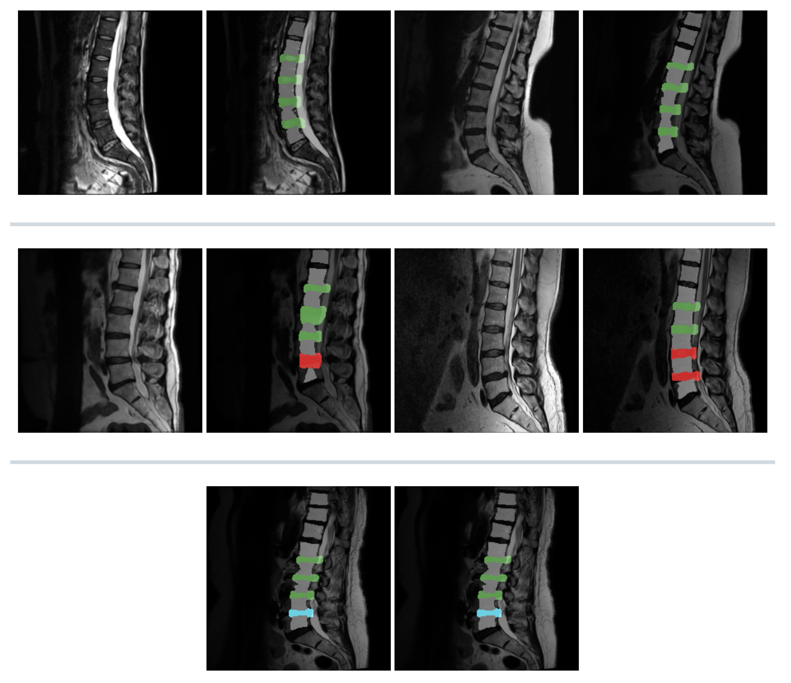
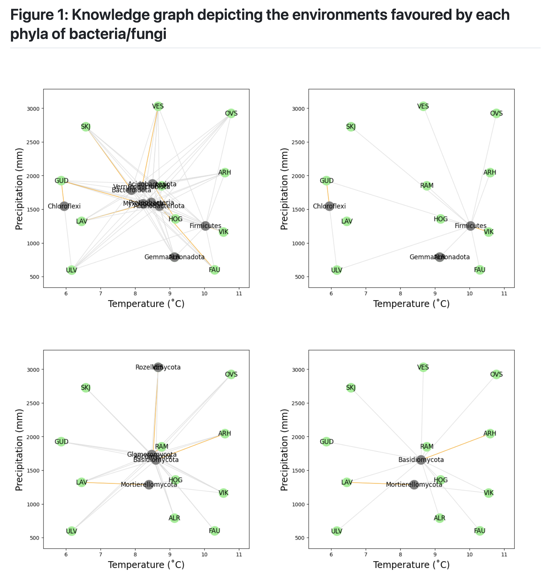
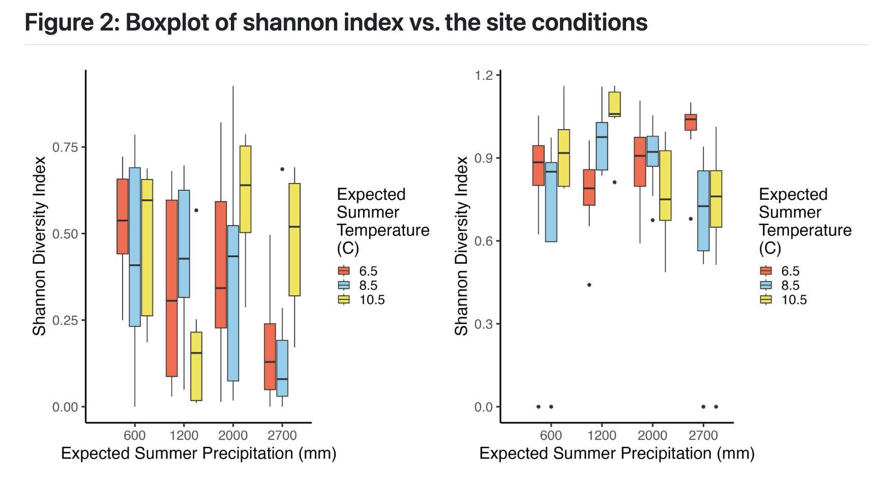

A project exploring the mathematical and statistical side of disease modelling
(as my dissertation focussed on the use of deep learning methods).
It combined the skills and experience gained in modules: Statistical Pattern
Recognition, Mathematical Modelling: Computational Methods
and Mathematical Ecology, Epidemiology & Evolution.
I found that Bayesian modelling can enable a strong idea of how a disease may spread through a population, with much less data and computational power than deep learning methods.
I found that Bayesian modelling can enable a strong idea of how a disease may spread through a population, with much less data and computational power than deep learning methods.


My undergraduate dissertation project,
for BSc Mathematics. This project entailed original research into
the deep learning architectures LSTMs (long-short term memory) and
GCNs (graph convolutional networks) in time-series forecasting. It
won the 'Best Novel Programming Project' Prize in 2025 from the
University of York and the Leeds-based medical software company, TPP.
I found that the most effective deep learning models were the LSTMs, however, my work suggests that statistical methods such as ARIMA are still the gold-standard for time-series prediciton.
I found that the most effective deep learning models were the LSTMs, however, my work suggests that statistical methods such as ARIMA are still the gold-standard for time-series prediciton.


A project based on a
Kaggle competition
whereby the RSNA (Radiological Society of North America)
curated the largest public dataset consisting of around 2,000
patients, with more than 100,000 slices of MRI scans.
A U-Net was trained to predict whether the patient has lumbar degeneration as well as the level of severity of said condition (normal/mild/severe). The RSNA provides a dataset of 1,975 patients of 35+ MRI scans.
My U-Net, trained from scratch, achieved roughly 66% accuracy on the evaluation set, which is a 60% increase on approaches with a pre-trained CNN, such as a ResNet.

A U-Net was trained to predict whether the patient has lumbar degeneration as well as the level of severity of said condition (normal/mild/severe). The RSNA provides a dataset of 1,975 patients of 35+ MRI scans.
My U-Net, trained from scratch, achieved roughly 66% accuracy on the evaluation set, which is a 60% increase on approaches with a pre-trained CNN, such as a ResNet.
A data science project completed in the
module 'Becoming a Bioscientist IV: Research in Action' at the University
of York. This project persued the question "Is there a correlation
between the receding tree line* and the microbes found there?".
Results showed that there were some data which pointed toward specific bacterial communities contributing to the growth of young saplings. There are grounds for further study into this theory of the relationship between the tree line and the temperature, precipitation and the microbes found there.
A technique I envisioned being useful was the use of a knowledge graph (figure 1), as the sites' coordinates are representative of their precipitation and temperature. This graph effectively communicates how sites and the micro-organisms are related to one another.
To achieve the level of detail and control I wanted, I created a custom R package 'py2RNetworkX', which ported the Python package NetworkX to R. py2RNetworkX Repo
Results showed that there were some data which pointed toward specific bacterial communities contributing to the growth of young saplings. There are grounds for further study into this theory of the relationship between the tree line and the temperature, precipitation and the microbes found there.
A technique I envisioned being useful was the use of a knowledge graph (figure 1), as the sites' coordinates are representative of their precipitation and temperature. This graph effectively communicates how sites and the micro-organisms are related to one another.
To achieve the level of detail and control I wanted, I created a custom R package 'py2RNetworkX', which ported the Python package NetworkX to R. py2RNetworkX Repo

